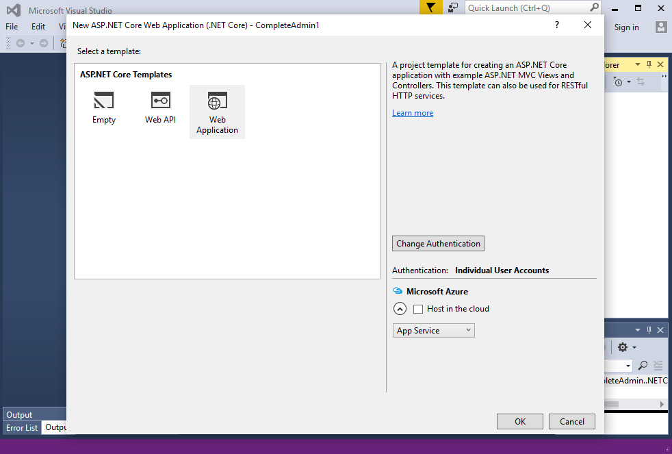

Complete Admin - Responsive Theme .NET CORE Version
Fully Loaded Bootstrap based Responsive Admin Theme for .NET CORE (MVC 6)
- by: themebuilder
- email: themebuilder@jaybabani.com
Thank you for purchasing our theme. If you have any questions that are beyond the scope of this help file, please feel free to email at themebuilder@jaybabani.com. Thanks so much!
About MVC CORE
ASP.NET Core is a new open-source and cross-platform framework for building modern cloud based internet connected applications, such as web apps, IoT apps and mobile backends. ASP.NET Core apps can run on .NET Core or on the full .NET Framework. It was architected to provide an optimized development framework for apps that are deployed to the cloud or run on-premises. It consists of modular components with minimal overhead, so you retain flexibility while constructing your solutions. You can develop and run your ASP.NET Core apps cross-platform on Windows, Mac and Linux. ASP.NET Core is open source at GitHub.
With ASP.NET Core you gain the following foundational improvements:
- A unified story for building web UI and web APIs
- Integration of modern client-side frameworks and development workflows
- A cloud-ready environment-based configuration system
- Built-in dependency injection
- New light-weight and modular HTTP request pipeline
- Ability to host on IIS or self-host in your own process
- Built on .NET Core, which supports true side-by-side app versioning
- Ships entirely as NuGet packages
- New tooling that simplifies modern web development
- Build and run cross-platform ASP.NET apps on Windows, Mac and Linux
- Open source and community focused
Brief Overview
Complete Admin is a premium admin dashboard theme. Specially designed to give your admin panel a unique and elegant look.It is easy to customize and coded in developer friendly manner.
It is fully responsive admin dashboard template built with Bootstrap 3+ Framework, HTML and CSS3, jQuery. It is adaptive with any size viewport. Solid integration of reusable UI components and latest trending plugins. This theme can be used for type of project applications.
Complete Admin includes many plugins implemented in 400+ separate views. It is designed to be a complete admin panel for any web project.
Tools & Technology
- Visual Studio 2015
- .NET CORE or MVC 6
- Bootstrap 3
- Complete Admin Theme and Resources
Features
- Built with Bootstrap 3.x
- jQuery
- Fully Responsive & Interactive
- Elegant & Clean User Interface
- Large collection of UI Components
- Interactive widgets
- Perfect Scroll Bar
- Brilliant Chat API
- Widgets like Todo task, notifications, Progress Tiles, Weather widget, User Profile tile, Counters etc.
- Expanded and Collapsed Menu (Multi Menu Levels)
- Page Loader Integration (PACE)
- Many Reusable UI Components
- ECharts
- Morris Chart
- Chartjs
- Flot Charts
- Sparkline Charts
- Easy Pie Chart
- Rickshaw Charts
- Pie Knobs
- Gauge Meter
- Google maps
- Vector maps
- Data Tables
- Responsive Tables
- Font Icons like Font Awesome & Glyphicons
- Full width & Boxed Layout
- Fully loaded Mailbox
- Form UI Groups & Elements
- Autonumeric
- Form Input masks elements
- Form Wizard
- jQuery Validations (message and icon based)
- Form Tags input
- CKEditor
- Bootstrap WYSIHTML5
- Markdown Editors
- Color Picker
- Date Picker
- Date Time Picker
- Time Picker
- File Dropzone (Drag and Drop Upload)
- iCheck Checkbox and Radio elements
- IOS type Switches
- Multi Select
- Select 2 - Select replacement library
- Typeahead library for prefilling
- UI KIT components
- jQuery Sortable
- Draggable Panels
- Spinner
- Range Sliders
- Calendar integration
- Numeric Counter
- Image Cropper
- Isotope Based Filterable Portfolio Gallery
- jQuery UI and easing integrated
- jsTree (File and Folder Management tool)
- Messenger Notifications
- Tocify
- Viewport Library for onscreen animations
- Pricing Tables (2 views - Narrow and Expanded)
- Timeline (2 types - Centered and left aligned)
- Login Page
- User Registration Page (with social media)
- Invoice
- Team Members
- Search Page
- Blogs
- FAQ
- 404, 500 etc. Error Pages
- User Lockscreen
- Grid Based System
- Google font - OpenSans and Oswald
- Theme Barebone included
- Well structured and formatted code
- Commented and Prefixed Based Stylesheet
- Detailed Documentation
- Works well in all latest browsers like chrome, Firefox, Opera, Safari, IE9+
Installation & Setup
1. You need to Install Visual Studio 2015. You can download Visual Studio Community Edition 2015 for free.
You might need to install Install .NET Core + Visual Studio tooling (https://www.microsoft.com/net/core#windows)
2. From the Visual Studio Start page, tap New Project.
Alternatively, you can use the menus to create a new project. Tap File > New > Project.
Complete the New Project dialog:
In the left pane, tap Web
At top select .NET Framework 4.5.2
In the center pane, tap ASP.NET Core Web Application (.NET Core)
Name the project CompleteAdmin (It’s important to name the project 'CompleteAdmin' so when you copy code, the namespace will match. )
Tap OK
Complete the New ASP.NET Core Web Application - CompleteAdmin dialog:
Tap Web Application
Change Authentication to Individual User Account
Clear Host in the cloud
Tap OK.

Visual Studio used a default template for the MVC project you just created, so you have a working app right now by entering a project name and selecting a few options.
Tap F5 to run the app in debug mode or Ctl-F5 in non-debug mode.
Now, Open the Project Location. It is the same location which you chose while setting up new project. It is shown in the New project dialog above image.
In the downloaded package, find the MVC project folder, Open the folder and Copy all the files and folders. Paste all the files in your Project location.
Please take caution of the directory structure while copy pasting the project files and folders.
If everything is done smoothly, then you just need to start debugging your project as show below. It should open the project in your default browser window.
Main Template (_Layout.cshtml)
The template consist of following components as show in image below:
1.) Main header Top Bar - Consist of logo, toggle options like the chat , messages, notifications, search and user profile shortcuts
2.) Side bar - Consist of user image and details, Main menu, Bar Graph Widgets
3.) Content Body
4.) Chat Slider - Consist of groups and Contact Users for instant messaging. Click on user opens the chat window with that user.
HTML Structre
Page Head
<!DOCTYPE html>
<html class="@ViewData["html_class"]">
<head>
<!--
* Package: Complete Admin - Responsive Theme
* Subpackage: Bootstrap
* Version: 2.0
* This file is part of Complete Admin Theme.
-->
<meta charset="utf-8" />
<meta name="viewport" content="width=device-width, initial-scale=1.0" />
<meta http-equiv="content-type" content="text/html;charset=UTF-8" />
<meta content="" name="description" />
<meta content="" name="author" />
<meta http-equiv="X-UA-Compatible" content="IE=edge" />
<link rel="shortcut icon" href="~/images/favicon.png" type="image/x-icon" /> <!-- Favicon -->
<link rel="apple-touch-icon-precomposed" href="~/images/apple-touch-icon-57-precomposed.png"> <!-- For iPhone -->
<link rel="apple-touch-icon-precomposed" sizes="114x114" href="~/images/apple-touch-icon-114-precomposed.png"> <!-- For iPhone 4 Retina display -->
<link rel="apple-touch-icon-precomposed" sizes="72x72" href="~/images/apple-touch-icon-72-precomposed.png"> <!-- For iPad -->
<link rel="apple-touch-icon-precomposed" sizes="144x144" href="~/images/apple-touch-icon-144-precomposed.png"> <!-- For iPad Retina display -->
<title>@ViewData["Title"] - Complete Admin .NET CORE MVC</title>
<environment names="Development,Staging,Production">
<!-- CORE CSS FRAMEWORK - START -->
<!-- <link href="~/lib/pace/pace-theme-flash.css" rel="stylesheet" type="text/css" media="screen" />-->
<link href="~/lib/bootstrap/css/bootstrap.min.css" rel="stylesheet" type="text/css" />
<link href="~/lib/bootstrap/css/bootstrap-theme.min.css" rel="stylesheet" type="text/css" />
<link href="~/fonts/font-awesome/css/font-awesome.css" rel="stylesheet" type="text/css" />
<link href="~/css/animate.min.css" rel="stylesheet" type="text/css" />
<link href="~/lib/perfect-scrollbar/perfect-scrollbar.css" rel="stylesheet" type="text/css" />
<!-- CORE CSS FRAMEWORK - END -->
<!-- OTHER SCRIPTS INCLUDED ON THIS PAGE - START -->
@RenderSection("styles", required: false)
<!-- OTHER SCRIPTS INCLUDED ON THIS PAGE - END -->
<!-- CORE CSS TEMPLATE - START -->
<link href="~/css/style.css" rel="stylesheet" type="text/css" />
<link href="~/css/responsive.css" rel="stylesheet" type="text/css" />
<!-- CORE CSS TEMPLATE - END -->
</environment>
@Html.ApplicationInsightsJavaScript(TelemetryConfiguration)
</head>
<body class="@ViewData["body_class"]">
@Html.Partial("_Topbar")
@Html.Partial("_Container")
@Html.Partial("_Pagehead")
@RenderBody()
@Html.Partial("_Footer")
<!-- OTHER SCRIPTS INCLUDED ON THIS PAGE - START -->
@RenderSection("scripts", required: false)
<!-- OTHER SCRIPTS INCLUDED ON THIS PAGE - END -->
<!-- CORE TEMPLATE JS - START -->
<script src="~/js/scripts.js" type="text/javascript"></script>
<!-- END CORE TEMPLATE JS - END -->
</body>
</html>
Main Menu
<!-- SIDEBAR - START -->
<div class="page-sidebar @(" " + (ViewData["mainmenu_scroll"] == "fixedscroll" ? @ViewData["mainmenu_scroll"] : "pagescroll" )) @ViewData["pagesidebar_class"]">
<!-- MAIN MENU - START -->
<div class="page-sidebar-wrapper" id="main-menu-wrapper">
<!-- USER INFO - START -->
<div class="profile-info row">
<div class="profile-image col-xs-4">
<a href="ui-profile.php">
<img alt="" src="~/data/profile/profile.jpg" class="img-responsive img-circle">
</a>
</div>
<div class="profile-details col-xs-8">
<h3>
<a href="ui-profile.php">Shane Taylor</a>
<!-- Available statuses: online, idle, busy, away and offline -->
<span class="profile-status online"></span>
</h3>
<p class="profile-title">Web Developer</p>
</div>
</div>
<!-- USER INFO - END -->
<ul class='wraplist'>
<li class='menusection'>Main</li>
<li class="@("" + (ViewContext.RouteData.Values["controller"]) == "Dashboard" ? "open" : "" )">
<a href="@Url.Action("Index", "Dashboard")">
<i class="fa fa-dashboard"></i>
<span class="title">Dashboard</span>
</a>
</li>
<li class="@("" + (ViewContext.RouteData.Values["controller"]) == "Layouts" ? "open" : "" )">
<a href="javascript:;">
<i class="fa fa-columns"></i>
<span class="title">Layouts</span>
<span class="arrow open"></span>
</a>
<ul class="sub-menu" style="@("" + (ViewContext.RouteData.Values["controller"]) == "Layouts" ? "display:block" : "" )">
<li>
<a class="@("" + (Url.RouteUrl(ViewContext.RouteData.Values) == "/Layouts/LayoutDefault" ? "active" : "" ))" href="@Url.Action("LayoutDefault", "Layouts")" >Default Layout</a>
</li>
<li>
<a class="@("" + (Url.RouteUrl(ViewContext.RouteData.Values) == "/Layouts/LayoutCollapsed" ? "active" : "" ))" href="@Url.Action("LayoutCollapsed", "Layouts")" >Collapsed Menu</a>
</li>
<li>
<a class="@("" + (Url.RouteUrl(ViewContext.RouteData.Values) == "/Layouts/LayoutChat" ? "active" : "" ))" href="@Url.Action("LayoutChat", "Layouts")" >Chat Open</a>
</li>
<li>
<a class="@("" + (Url.RouteUrl(ViewContext.RouteData.Values) == "/Layouts/LayoutBoxed" ? "active" : "" ))" href="@Url.Action("LayoutBoxed", "Layouts")" >Boxed Layout</a>
</li>
<li>
<a class="@("" + (Url.RouteUrl(ViewContext.RouteData.Values) == "/Layouts/LayoutBoxedCollapsed" ? "active" : "" ))" href="@Url.Action("LayoutBoxedCollapsed", "Layouts")" >Boxed Collapsed Menu</a>
</li>
<li>
<a class="@("" + (Url.RouteUrl(ViewContext.RouteData.Values) == "/Layouts/LayoutBoxedChat" ? "active" : "" ))" href="@Url.Action("LayoutBoxedChat", "Layouts")" >Boxed Chat Open</a>
</li>
</ul>
<li class='menusection'>Navigation</li>
<li class=""> <a href="javascript:;"> <i class="fa fa-folder-open"></i> <span class="title">Menu Levels</span> <span class="arrow "></span> </a>
<ul class="sub-menu">
<li > <a href="javascript:;"> <span class="title">Level 1.1</span> </a> </li>
<li > <a href="javascript:;"> <span class="title">Level 1.2</span> <span class="arrow "></span> </a>
<ul class="sub-menu">
<li > <a href="javascript:;"> <span class="title">Level 2.1</span> </a></li>
<li > <a href="javascript:;"> <span class="title">Level 2.2</span> <span class="arrow "></span></a>
<ul class="sub-menu">
<li > <a href="javascript:;"> <span class="title">Level 3.1</span> <span class="arrow "></span></a>
<ul class="sub-menu">
<li > <a href="javascript:;"> <span class="title">Level 4.1</span> </a> </li>
<li > <a href="javascript:;"> <span class="title">Level 4.2</span> </a> </li>
</ul>
</li>
<li > <a href="javascript:;"> <span class="title">Level 3.2</span> </a> </li>
</ul>
</li>
</ul>
</li>
</ul>
</li>
</ul>
</div>
<!-- MAIN MENU - END -->
<div class="menustats">
<h5>Project Progress</h5>
<div class="progress">
<div class="progress-bar progress-bar-primary" role="progressbar" aria-valuenow="50" aria-valuemin="0" aria-valuemax="100" style="width: 50%;">
</div>
</div>
<h5>Target Achieved</h5>
<div class="progress">
<div class="progress-bar progress-bar-accent" role="progressbar" aria-valuenow="70" aria-valuemin="0" aria-valuemax="100" style="width: 70%;">
</div>
</div>
</div>
</div>
<!-- SIDEBAR - END -->
Main Content
<!-- START CONTENT -->
<section id="main-content" class=" ">
<section class="wrapper" style='margin-top:60px;display:inline-block;width:100%;padding:15px 0 0 15px;'>
<div class='col-lg-12 col-md-12 col-sm-12 col-xs-12'>
<div class="page-title">
...
</div>
</div>
<div class="clearfix"></div>
<div class="col-lg-12">
<section class="box ">
...
</section>
</div>
</section>
</section>
<!-- END CONTENT -->
Chat bar
<div class="page-chatapi hideit">
<div class="search-bar">
<input type="text" placeholder="Search" class="form-control">
</div>
<div class="chat-wrapper">
<h4 class="group-head">Groups</h4>
<ul class="group-list list-unstyled">
<li class="group-row">
<div class="group-status available">
<i class="fa fa-circle"></i>
</div>
<div class="group-info">
<h4><a href="#">...</a></h4>
</div>
</li>
<li class="group-row">
...
</li>
</ul>
<h4 class="group-head">Favourites</h4>
<ul class="contact-list">
<li class="user-row" id='chat_user_1' data-user-id='1'>
<div class="user-img">
<a href="#"><img src="data/profile/avatar-1.png" alt=""></a>
</div>
<div class="user-info">
<h4><a href="#">...</a></h4>
<span class="status ..." data-status="...">...</span>
</div>
<div class="user-status ...">
<i class="fa fa-circle"></i>
</div>
</li>
<li class="user-row" id='chat_user_2' data-user-id='2'>
...
</li>
</ul>
<h4 class="group-head">More Contacts</h4>
<ul class="contact-list">
<li class="user-row" id='chat_user_4' data-user-id='4'>
...
</li>
... ... ...
</ul>
</div>
</div>
<div class="chatapi-windows ">
</div>
CSS
style.css is the main CSS file located in wwwroot/css/ folder of the package. Whole CSS file is well indexed with topic and its related code.
@section Styles
Stylesheets dependent for a particular view or page is noted in between @section Styles{ ... }
Javascript
scripts.js is the mail javascript file having all the js code. File is located in assets/js/ folder. This file code is also well formatted and section in different respective function names.
Along with this chart library based js code and dashboard based js code are added in separate files for ease of use of user.

@section Scripts
Scripts dependent for a particular view or page is noted in between @section Scripts{ ... }
Enviornment
You would have noticed Enviornment tag in the @section Styles{ ... } and @section Scripts{ ... }
Enviornment tags defining which set of scripts to load on a page depending on your project enviornment. If you project is in developement, Staging or Production Phase you can load different set of stylesheets and scripts.
Layout Options
Complete admin comes with various layouts like chat open, menu collapsed, boxed etc. All these layouts can be managed from @ViewData variable. Open Files in Views/Layouts folder and check the ViewData options added in the file.
Fonts
Google fonts are used in the theme. They are as follows:
- Roboto - Used in Menu, page heading and buttons etc.
- Opensans - Default Body fonts and used in most of the places
Plugin List
Complete Admin - Responsive Theme uses many different jquery and CSS based plugins to give it amazing features. Below is the list of all plugin used.
THANK YOU!
Once again, thank you so much for purchasing this Theme. As I said at the beginning, I'd be glad to help you if you have any questions relating to this theme.